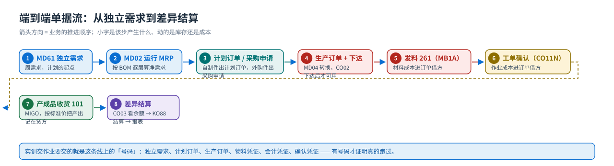
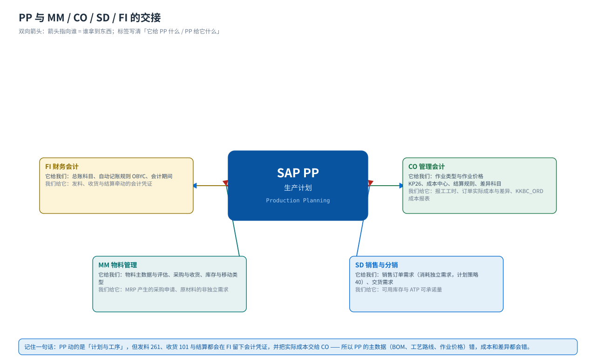

概念与定位
PP 是什么：四段闭环、对象与凭证链、与 MM/CO/SD/FI 的分界
先回答四个问题：PP 到底管什么？它产出哪些对象与凭证？它的边界在哪里？一笔业务从计划到结账要经过谁。
一句话定义
PP = Production Planning（生产计划）
管「把需求变成可执行的车间任务，并算出它花了多少钱」：要造什么（需求与 MRP）、造多少什么时候造（计划订单与生产订单）、怎么造（BOM 与工艺路线）、花了多少（标准成本与订单差异）。
它不负责买（那是 MM），不负责卖（那是 SD），但它是两者的中游：MRP 跑出来的原材料需求会变成 MM 的采购申请，产成品库存会成为 SD 的可承诺量；而每一次发料、报工、收货都会进入 CO 的订单成本。

四段闭环：需求 → 计划 → 执行 → 成本
| 环节 | 管什么 | 典型前台事务（教材任务） | 产出的对象 |
|---|---|---|---|
| 需求管理 Demand Management | 产成品与贸易商品的独立需求（周计划）、计划策略组决定销售与生产的衔接方式 | MD61 独立需求（任务 33）· MM02 计划策略组（任务 32） | 独立需求计划（PIR） |
| 物料需求计划 MRP | 净需求计算、BOM 逐层展开、提前期回排、批量与安全库存；产成品出计划订单，外购件出采购申请 | MD02 单项多层（任务 36）· MD05 MRP 清单（任务 34）· MD04 库存/需求清单（任务 35） | 计划订单、采购申请 |
| 生产执行 Production Order / 车间现场控制 | 把计划订单转成生产订单、下达、发料、工单确认（报工/倒冲）、产成品收货、技术性完成 | CO02（任务 42/47）· MB1A（任务 43）· CO11N（任务 44）· MIGO（任务 45）· COOIS（任务 38） | 生产订单、预留、确认凭证、物料凭证 |
| 产品成本与结算 Product Cost | 标准成本估算与价格更新、订单实际成本归集、差异计算与期末结算、成本报表 | CK11N（任务 22）· CK24（任务 23/25）· CO03（任务 46）· KO88（任务 48）· KKBC_ORD（任务 49） | 成本估算、结算凭证 |
对象与凭证清单：PP 的「证据链」
| 对象 / 凭证 | 谁产生 | 事务码（教材任务） | 它的作用 | 对库存与财务的影响 |
|---|---|---|---|---|
| 独立需求计划 PIR | 计划部门 | MD61（任务 33） | 计划的起点：从今天到下月末的周需求；不是会计凭证，只是一条需求 | 无 |
| MRP 清单 | 系统（MRP 运行） | MD05（任务 34） | 上次 MRP 运行的静态快照（画面带时间戳），用来做前后对比 | 无 |
| 计划订单 Planned Order | MRP 运行 | MD02 结果（任务 36） | 还没确认的计划要素，可以被系统自动改写时间（教材画面里旧计划订单被改到可行日期） | 不占库存、不记账 |
| 生产订单 Production Order | 计划员转换 / CO01 | MD04 转换（任务 37）· CO02 下达（任务 42） | 车间执行的载体：带 BOM 组件、工序、计划成本；只有下达后才能执行 | 下达产生预留（物料需求） |
| 采购申请 Purchase Requisition | MRP / 需求部门 | 任务 36 的 MRP 结果 · 任务 39 转换 | 原材料的非独立需求落成的内部需求（教材画面 PurRqs 0010000020/00010） | 无（转成采购订单才对外承诺） |
| 采购订单 Purchase Order | 采购员 | 任务 39（MD04 里转换） | 对供应商的承诺：供应商、净价、交期、工厂 | 无（收货才动库存） |
| 预留 Reservation | 生产订单下达 | 任务 42 / 43 | 把 BOM 组件的需求「钉」在某张订单上（任务 39 画面里 DepReq 变成 OrdRes） | 不减库存，只占用可用量 |
| 物料凭证 Material Document | 仓库 / 车间 | MIGO（任务 40/45）· MB1A（任务 43） | 库存变动的原始凭证：261 发料减库存、101 收货增库存 | 自动生成会计凭证 |
| 确认 Confirmation | 车间 / 班组长 | CO11N（任务 44） | 报工：产出数量、工时、是否倒冲；决定作业成本进订单 | 通过作业价格进入订单成本（CO） |
| 发票凭证 Invoice Document | 财务 / 采购 | MIRO + MRBR（任务 41） | 三单匹配（订单 / 收货 / 发票），教材在 PP 里也走了一遍 | 借 GR/IR、贷应付 |
| 结算凭证 Settlement Document | 成本会计 | KO88（任务 48） | 把订单差异结到差异科目或成本对象（教材此处因未维护结算规则而报错） | 会计凭证 |
最容易混的一点「生产订单建好了」不等于「可以干活了」。教材任务 42 的原话是：生产订单采用状态管理，创建出来的订单还不能执行，只有把它下达之后才能执行（才会有预留、才能发料/报工/收货）。看状态用事务码
CO03 抬头旁的状态按钮或「i」按钮。凭证流向一张图
{kind=link}

与邻居模块的分界
{kind=link}

| 情况 | 该找谁 |
|---|---|
| 要给原材料下单、收货、发票校验 | MM（ME21N/MIGO/MIRO）—— PP 只产生采购申请 |
| 要维护物料的采购视图、物料的评估类 | MM（MM01/MM02）；PP 只补生产计划视图 MMF1（任务 16） |
| 要卖产成品、做 ATP 确认与发货 | SD（VA01/VL02N）；PP 提供库存与可用量 |
| 要维护作业类型与作业价格 | CO 的 KP26（教材任务 12 就是卡在这里没做完） |
| 要看订单的成本与差异、做期末结算 | CO 的 CO03/KO88/KKBC_ORD（任务 46/48/49） |
| 要看会计凭证、总账科目、会计期间 | FI（FB03/FS00/OB52） |
12 个常见误解
| # | 常见说法 | 实际上 |
|---|---|---|
| 1 | 「MRP 一跑就会自动下采购订单和生产订单」 | MRP 只产生计划订单（产成品）和采购申请（外购件）；要转换成生产订单/采购订单得在 MD04 里手工做（教材任务 37/39 就是这么演示的）。 |
| 2 | 「生产订单创建好了就能发料」 | 必须先下达（CO02，任务 42）。未下达的订单没有释放的预留，发料/报工都做不了。 |
| 3 | 「MD05 和 MD04 是一回事」 | MD05 是上次 MRP 运行的静态结果（教材任务 34 特意让学生看画面上的时间戳）；MD04 是动态的库存/需求清单，新建的独立需求立刻能看到（任务 35）。 |
| 4 | 「BOM 是财务做成本才用的」 | 教材任务 06 的原话是：MRP 最主要的基础是 BOM。BOM 决定展开出哪些非独立需求，成本核算只是第二个用户。 |
| 5 | 「工艺路线就是一张工序清单」 | 工艺路线把工序 × 工作中心 × 控制码 × 标准值连起来，它决定排程日期、能力需求、以及作业成本的来源（任务 14/15）。 |
| 6 | 「工作中心就是一台机器」 | 工作中心是执行工序的资源集合，可以含多台设备或一组人；教材把整个工厂的人工工时能力统一维护在一个共享能力上，再分配给各人工工作中心（任务 10/12）。 |
| 7 | 「拆分工序（Split）会把工序删掉」 | 拆分是把一个工序的数量分到几条并行线上执行，工艺路线的结构不变（任务 15 在「所需分解」前打勾后保存）。 |
| 8 | 「独立需求和非独立需求是一回事」 | 独立需求来自计划（MD61）或销售订单；非独立需求（DepReq）由上层 BOM 展开产生，日期还要考虑生产提前期（任务 36 画面）。 |
| 9 | 「CK11N 算完标准成本就生效了」 | CK11N 只是算；CK24 先标记成未来价格（任务 23，教材画面 2,538.66），再发布才更新物料的标准价格（任务 25/26）。 |
| 10 | 「订单成本差异是财务的事，车间不用管」 | 差异 = 订单实际成本（发料 + 报工工时）− 产出（产成品按标准价收货）；车间少报工、多耗料，差异就出来了（任务 46 看到余额，任务 48 做结算）。 |
| 11 | 「对生产订单收货就是卖出去了」 | 那是产成品入库，按标准价把产出贷记到订单上；真正的销售发货是 601（SD 侧），在 MM/SD 的流程里。 |
| 12 | 「可用性检查必须在创建订单时自动跑」 | 教材任务 31 明确：颐宁工厂的 PP01 创建时不自动检查物料/PRT/产能可用性，但这并不意味着禁止 —— 可以手工触发可用性检查。不自动 ≠ 不允许。 |
教材画面（先建立整体印象）